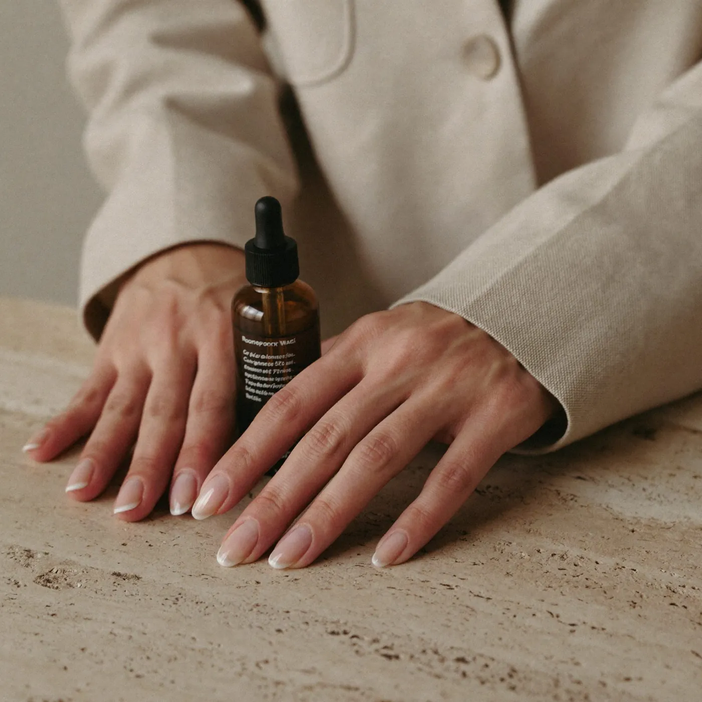
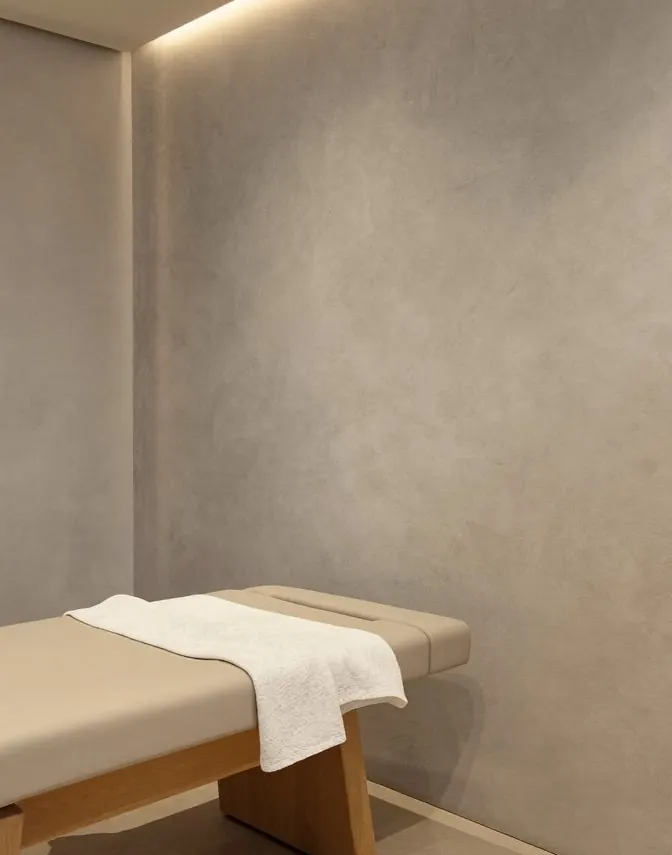

Ácido hialurónico · Pereira
Relleno de labios
Labios definidos e hidratados, que siguen pareciendo tuyos.

Qué es
Con ácido hialurónico podemos definir el contorno, dar un poco de volumen o simplemente hidratar en profundidad. Trabajamos en poca cantidad y respetando la proporción de tu boca con el resto de tu cara.
Duración
30–45 minutos
Sesiones
Una sesión
Recuperación
Inflamación leve 24–72 horas
Los tiempos son orientativos. En tu valoración te decimos qué aplica a tu caso.
Para quién
¿Es para ti?
Evaluamos antes de recomendar.
En detalle
Relleno de labios natural en Pereira
Si lo que te frena es el miedo a que se note, empecemos por ahí. Un relleno de labios no tiene que ser “más boca”. Puede ser solo perfilar el borde, corregir una asimetría leve o devolver hidratación a unos labios que se ven secos.
Antes de poner producto miramos tu cara completa: la nariz, el mentón, cómo sonríes. La boca tiene que verse en armonía con todo lo demás.
Definir, hidratar o dar volumen
- Definir. Marcar el contorno para que el labio se vea más nítido.
- Hidratar. Mejorar la textura y las líneas finas sin cambiar el tamaño.
- Volumen sutil. Un poco más de cuerpo, en poca cantidad.
Muchas veces es una mezcla de las tres. Lo definimos juntos en la valoración.
Antes de un evento
Los labios se pueden inflamar durante 24 a 72 horas y a veces aparece un pequeño morado. Si tienes una fecha importante, agenda con por lo menos dos semanas de margen. Y si es tu primera vez, mejor todavía con más tiempo.
Preguntas frecuentes
Lo que suelen preguntarnos.
¿Cuánto cobran por un relleno de labios en Pereira?+
Depende de la cantidad de producto y de lo que buscamos: hidratar, definir o dar volumen. Te damos el valor exacto en la valoración, antes de empezar.
¿Cuánto dura el relleno de labios?+
Varios meses. En los labios suele durar menos que en otras zonas porque es una zona con mucho movimiento. Te damos una referencia según el producto y tu caso.
¿Se puede revertir?+
Sí. El ácido hialurónico se puede disolver con una enzima (hialuronidasa) si alguna vez fuera necesario.
¿Se va a notar que me hice algo?+
La idea es que se note que te ves bien, no qué te hiciste. Empezamos con poca cantidad y, si hace falta, completamos después.
Del blog
Para leer antes de tu cita.
Cuánto dura el relleno de labios y por qué cambia tanto
Tres pestañas, tres cifras distintas. Por qué el relleno de labios dura menos que en otras zonas, qué lo hace variar y cómo se decide cuándo volver.
Leer →¿Cuánto rinde 1 ml de ácido hialurónico en la cara?
Es menos volumen del que imaginas. Para qué puede alcanzar, por qué la cantidad se define viéndote en persona y qué pasa si algo no queda bien.
Leer →También te puede interesar
Ácido hialurónico
Volumen y soporte donde tu rostro los fue perdiendo.
30–45 minDura 9–18 mesesVer tratamiento →Mirada descansadaTratamiento de ojeras
Una mirada descansada, sin cambiar tu expresión.
30–45 minSegún tu ojeraVer tratamiento →Líneas de expresiónToxina botulínica
Relaja las líneas de expresión sin quitarte la expresión.
20–30 minSin incapacidadVer tratamiento →
Valoración médica
Conversemos sobre lo que quieres cuidar.
Primero te escuchamos. Luego recomendamos.